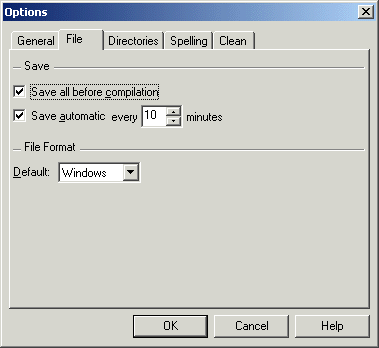

The tab 'File' in the dialog 'Options'
allows users to modify the file handling of TeXnicCenter.

The meaning of the controls is:
- 'Save new document immediately'
- If this option is enabled, then as soon as a new document has
been created it will be saved without delay.
- 'Save all before compilation'
- If this option is enabled, TeXnicCenter will save all modified
files before the
build process is started.
- 'Save automatic every x minutes'
- If enabled, TeXnicCenter will save all modified files at the
specified interval.
- 'Default'
- TeXnicCenter supports three file formats:
Those formats only differ in the character sequence used as line feed.
Choose the default format here. The format for each file can be changed
in the dialog 'File|Save As...' individually.